Description For Using T28DISPLAY program – Version 1.0
- The “Statistics” option
It is designed to run and display the statistical data for the 2DC, HVPS and HAIL data for the STEPS 2000 project. After choosing this option the following window will open:
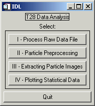
In order to provide the statistic displays, for each flight, the data has to be processed as follows:
-
First – Choose “I – Process Raw Data File” , then select probe type:
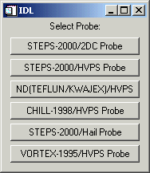
Suppose the user selects to process the 2DC data first (The same procedure should be followed for the HVPS and HAIL data). The user is asked to choose a flight number. Next, a window will appear asking if find_part (blob) will be run later: 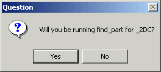
Find_part calculates buffer and particle (blob) quantities for selected buffers and saves them to .buf and .par files, respectively. It also creates a log file documenting anomalous buffers, and a file that contains the indices for all occluded pixels (.ind).
This is an intermediate step that allows checking if the *.buf file was created previously. If the flight has been processed before and a .buf file was created then another menu appears - Fnnnpppp.buf exists (nnn=flight number, pppp=probe type). Select:
OK to overwrite the existing file. 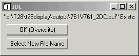
Select New File Name to create a new file. Then type in the new file name.
If the selected flight number has not been processed before (for any probe type), a message appears stating Could not find Fltnnn.dir – creating. Select OK. The directory info from the SEA raw file is extracted and written to a .dir file for future use. The .dir file reduces the processing time on future runs, as it is quicker to read than to extract the directory info from the raw file. While the directory info is being extracted a small window, Reading SEA Directory, is displayed indicating the progress of reading the raw file. A .txt file and a .err file also are created while the directory is being extracted. The .txt file is a copy of all the SEA .txt tables. The .err file is a copy of all info found in the SEA error tags. All these files are saved under the “output” directory, in the corresponding subdirectory for the flight to be processed (e.g. 747, 748, …)
A Summary of SEA Records window is displayed. It shows the number of records of Slow Data (which are one per second), 2DC, Hail and HVPS data, that is found in the raw (or .dir) file. The Text Records refer to the SEA text records used during the flight, and Error Records include possible errors recorded.
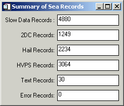
A Plot Buffer Times? menu is displayed. If Yes is selected, a plot
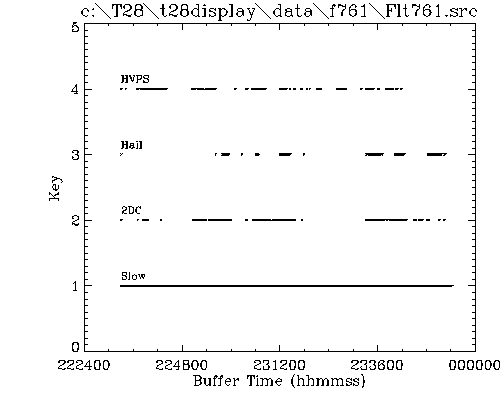
is created showing the times for each buffer type (slow,2DC,HVPS,Hail).
Slow data are extracted from the raw file for each 2D buffer time point. This process can take several minutes so, the first time through, a .slw file is created which contains the extracted slow data. In subsequent runs the slow data is read from the .slw file instead of extracting it from the raw file again. A progress bar is displayed indicating the status of the processing. Currently only 4 slow data quantities are extracted – calculated TAS, static pressure 1, Rosemount temperature, and FSSP LW. These 4 quantities are saved in the .buf file (1 record for each buffer). When the routine calculates the FSSP LW, it displays an editable text widget asking for the location of the FSSP.chn file. Currently the path is set to the fssp.chn file found in the lib directory. To accept the current path/filename, click in the window and press enter.
Seven quantities are plotted which are indicators of the validity of the directory and slow data extraction (Extracted Data).
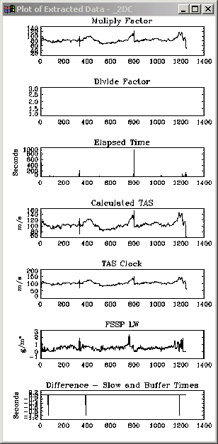
A small menu asks if a PS file should be created (for printing). The quantities plotted are:
Multiply and divide factors – These are SEA quantities that are extracted from the 2D buffers. These 2 values in combination give the probe clock frequency (= (Mult Factor/Div Factor) * 50.0 Hz). Typical values for the STEPS-2000/HVPS are around 50 and 10, and for the STEPS-2000/2DC are around 80 and 1, respectively.
Elapsed time – This is also a SEA quantity extracted from the 2D buffer. It should be a measure of the time it took to fill the 2D buffer and should be close to the sum of interparticle times (TAC) found in the image buffer. This quantity is always available with the STEPS-2000/2DC but only on the later flights of STEPS-2000/HVPS.
Calculated TAS – Values should range from 70 to 120 m/s.
TAS Clock – Calculated from the multiply and divide factors. Should be close to the Calculated TAS.
FSSP LW – Values should range from 0 to 3 g/m3.
Difference between the slow data times and 2D buffer times – If slow data buffers were found close to the 2D buffer times then these differences should be very small (< 1 sec).
A short but wide window appears that contains 3 sliders (Select Time/Buffer Interval To Process).

The top slider is for selecting the starting buffer/time for processing. The slider below that is for the ending buffer/time for processing. The bottom slider is for selecting a skip interval (e.g., every 2nd, 3rd, … buffer).
A menu (Select Processing) appears for selecting the type of processing:
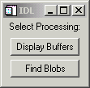
Display Buffers – This option displays the selected 2DC (or HVPS or Hail) image buffers in a 1,2,3 or 4-column format that can then be printed to a PS file.
Find Blobs – This option steps through each selected 2DC (or HVPS or Hail) image buffer and derives quantities for each buffer (a .buf file) and each particle (a .par file). If the probe type is STEPS-2000/HVPS then the charge data for each buffer is extracted (a .chg file). An .ind file also is created which contains the image indices of each occluded pixel in a decoded and scale rectified buffer image. Finally a .log file is created which stores info about any detected buffer anomalies. All these files are saved under “output directory”. The status of the processing is displayed in a window (Buffer Processing) which shows the buffer number, the current decoded (unscaled) image buffer, number of particles in the buffer, etc.
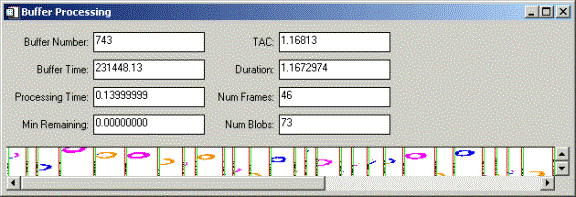
-
Second – Choose “II – Particle Preprocessing” , then select probe type:
This is a routine for transforming the particle info file (.par) from particle ordered to quantity ordered (.xpr). That is, in the .par file, every quantity for the first particle is stored first, then every quantity for the second particle is stored second, etc. In the .xpr file, the first quantity for every particle is stored first, the second quantity for every particle is stored second, etc. Extracting particle info from the .xpr file is much faster and requires less memory than doing so from the .par file.
The menu Select Probe Type is displayed.
Each choice indicates both the project and the probe. (Select only the STEPS-2000 choices now)
An IDL file selection dialog appears entitled Please Select a File.
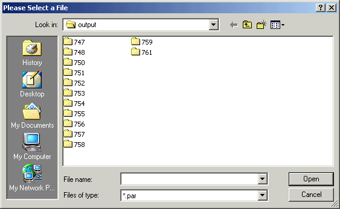
The selected file should be one created by “I – Process Raw Data File” option and have a .par extension. Through this second step, the *.par file is transposed. It can take a couple minutes. The output window indicates the status by displaying the status of the process in 6 steps as 1 of 6, 2 of 6, …. When finished a sample plot
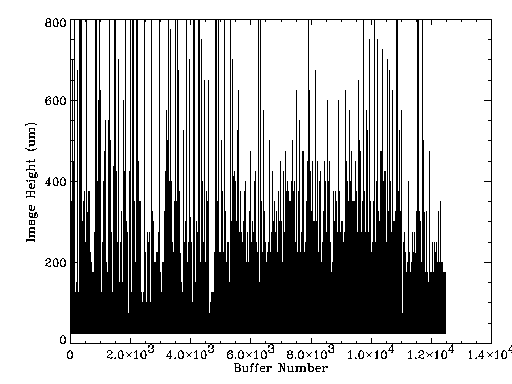
of one quantity (currently the y dimension for the probe) is displayed as an indication of a successful transpose. The size of the .xpr file should be the same as the .par file.
Third – Choose “III – Extracting Particle Images” , then select probe type
This is a routine for extracting particle images from the .ind file (created by “I – Process Raw Data File”) meeting a selected size range and displaying them in a sorted-by-size format.
The menu Select Probe Type is displayed. Each choice indicates both the project and the probe. (Select only the STEPS- 2000 choices now)
An IDL file selection dialog appears entitled Please Select a File. The selected file should be one created by “I – Process Raw Data File” and have a .buf extension.
A short but wide window appears that contains 3 sliders (Select Time/Buffer Interval To Process). The top slider is for selecting the starting buffer/time for processing. The slider below that is for the ending buffer/time for processing. The bottom slider is for selecting a skip interval, which is currently not used.
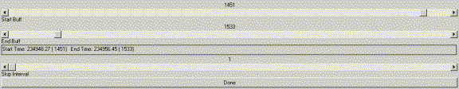
Another window containing sliders appears entitled Select Size Range.
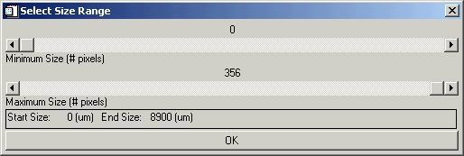
Select the minimum size with the top slider and the maximum size with the bottom slider. Hopefully the sliders provide reasonable ranges and size increments for the selected probe type.
Two windows appear - Scaled Buffer Image
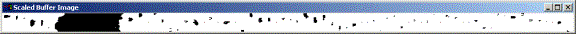
and Extracted Particle Images. The 1st shows the scaled image buffers as the routine searches through them for particles that fall within the selected size range. The 2nd window shows the particles as they are found.
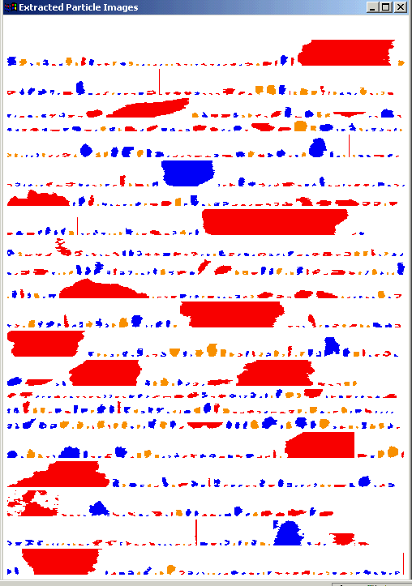
When the selected buffer/time interval has been scanned or the 2nd window is full of particle images (whichever comes first), the extracted particle images are redisplayed sorted from smallest to largest (bottom to top, respectively). They are also color-coded based on a classification scheme developed by Dr. Detwiler.
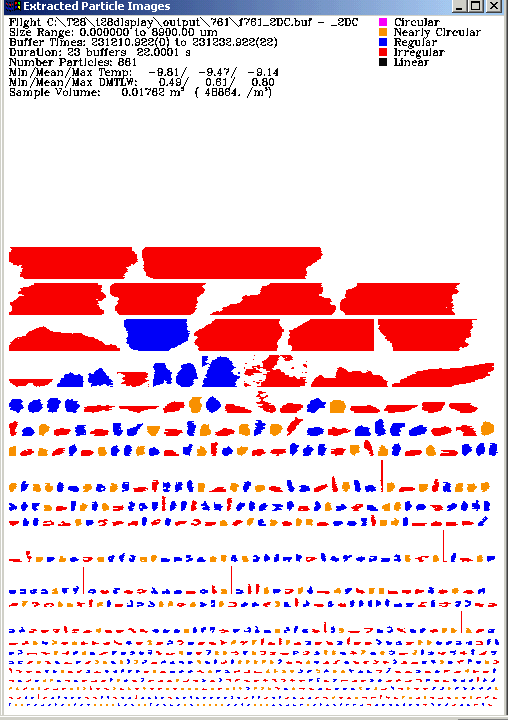
Some ancillary text info also is displayed at the top of the window. A small Create PS File? menu also appears providing an opportunity for making a hardcopy.
A TAC Filtering Plot appears.
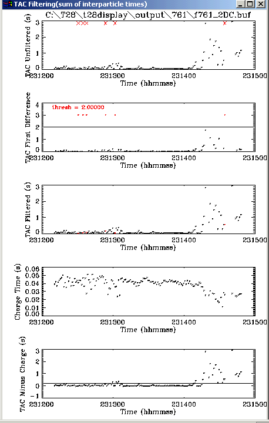
TAC is the sum of interparticle times and is saved in the .buf file. Sometimes this time is unrealistically large as a result of some type of data system error during recording. The sum of TAC values for the selected buffer/time interval is used in sampling volume calculations. If one or more of these large values is included in the sum, a bad number or mass concentration can result. Therefore, a method to detect/filter those large values is used so that they can be replaced with a neighboring value. The filtering is simply done by placing a threshold on the first difference of TAC values. This set of plots shows the steps in that process:
- The 1st plot shows the raw TAC values.
- The 2nd shows the first difference and the threshold. The threshold is set in get_specs.pro (in the Lib subdirectory) for each probe type. If the difference in TAC between 2 successive buffers is less than this threshold the TAC value is considered valid otherwise it is replaced by the nearest TAC value. The disadvantage of applying a simple threshold to the first difference is that in very low hydrometeor concentrations, interparticle times can be unusually large.
- The 3rd plot shows the TAC values after the large values have been replaced (they appear in red).
- The 4th plot shows the calculated charge measuring time. These values will be non-zero only for HVPS-Charge data.
- The 5th plot shows the TAC values after subtracting the charge measuring time. Again the filtered values are shown in red. This set of plots should indicate whether the TAC filtering process is valid. A small menu appears, Create PS File?, which provides an opportunity to print the plot.
==============================================================
Fourth – Choose “IV – Plotting Statistical Data” , then select probe type
This is a routine for plotting data created by the “I – Process Raw Data File” (found in the .buf and .xpr files).
The menu Select Probe Type is displayed. Each choice indicates both the project and the probe. (Select only the STEPS-2000 choices now)
An IDL file selection dialog appears entitled Please Select a File. The selected file should be one created by “I – Process Raw Data File” and have a .buf extension.
A short but wide window appears that contains 3 sliders (Select Time/Buffer Interval To Process). The top slider is for selecting the starting buffer/time for processing. The slider below that is for the ending buffer/time for processing. The bottom slider is for selecting a skip interval, which is currently not used.
A TAC Filtering Plot appears.
TAC is the sum of interparticle times and is saved in the .buf file. Sometimes this time is unrealistically large as a result of some type of data system error during recording. The sum of TAC values for the selected buffer/time interval is used in sampling volume calculations. If one or more of these large values is included in the sum, an invalid number/mass concentration value can result. Therefore, a method to detect/filter those large values is used so that they can be replaced with a neighboring value. The filtering is simply done by placing a threshold on the first difference of TAC values. This set of plots shows the steps in that process. The 1st plot shows the raw TAC values. The 2nd shows the first difference and the threshold. The threshold is set in get_specs.pro for each probe type. The 3rd plot shows the TAC values after the large values have been replaced (they appear in red). The 4th plot shows the calculated charge measuring time. These values will be non-zero only for HVPS-Charge data. The 5th plot shows the TAC values after subtracting the charge measuring time. Again the filtered values are shown in red. This set of plots should indicate whether the TAC filtering process is valid. A small menu appears, Create PS File?, which provides an opportunity to print the plot. The disadvantage of applying a simple threshold to the first difference is that in very low hydrometeor concentrations, interparticle times can be unusually large.
If the .xpr file does not exist a message
appears Warning
.xpr does not exist - run xpose_par to create it. If you click OK, “II –
Particle Processing” step will be run automatically.
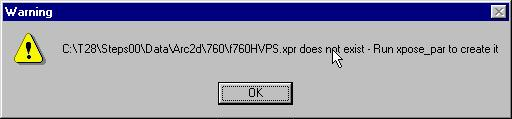
Finally a long menu appears for many different plot choices (Select a Plot).
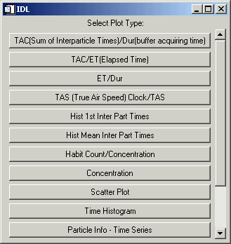 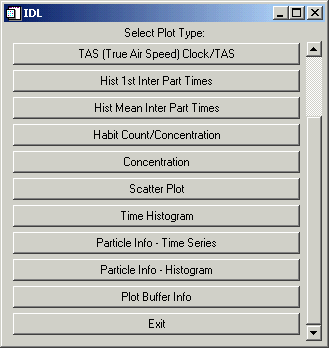
Some plots are intended to be more diagnostic such as comparing TAC values with inter-buffer times or elapsed times. Some are for viewing data contained in the .buf file and others for viewing data in the .xpr (.par) file. Some are in a histogram format and others are in a time sequence.
Glossary
Area – The particle cross-sectional
area (mm2
) (i.e., Number of Pixels * Area of a pixel).
Area Ratio - One of several measures of roundness. The actual particle cross-sectional area is compared to that of a circle with the same "diameter" as that attributed to the particle. The value is expressed as a percentage.
Area Max – The area of the particle image using the Max Length as the diameter (mm2).
Area Recon – Area of the particle based on the reconstructed y dimension (for particle images in which the bottom or top or both are occulted) (mm2).
# Blobs – The total number of particle images found in a buffer.
Blob Number - The particle image sequence number in a buffer.
Bottom Occulted – The number of pixels (or length in mm), if any, of the particle image found on the bottom line/detector of the sampling area.
Buffer Number – SEA buffer number display vs. Time.
Calc TAS – True air speed calculated from dynamic pressure and
compensated for static pressure and temperature (m/s).
CHI – Standard deviation of the perimeter from the particle image center of mass. Estimates the center measure of irregularity for particle. Its value is large for irregular particles and small for circular ones.
Charge Ind –
A pointer used to locate the charge data for a
specified particle in the .chg file.
Charge Time – calculated charge-measuring time [s].
COM X – Center of mass in the x or horizontal direction.
COM Y – Center of mass in the y or vertical direction.
Conc =
Concentration, number of particles per m3.
Concentration
– Option under “Statistics – IV Plotting
Statistical Data” for plotting a histogram of various quantities.
Date Create
– The date that the .par file was created.
Date Edit – This
is currently not used but was intended to allow for manual editing of the
particle image classification at a later date.
Diam SD –
Standard Deviation of particle diameter (Heymsfield) for a buffer (µm).
Div Factor
– SEA parameter recorded in each buffer.
Used to calculate the probe TAS clock speed.
Dur = Duration. The time difference between the beginning of the current buffer and the next one. Can be compared to elapsed and sum of interparticle times if the probe is sampling at a sufficiently high rate.
Eccentricity – The “elongatedness” of a particle image.
ET = Elapsed Time. It is the time in microseconds for acquiring a buffer as measured by the SEA data system.
End Frame – The ending column number for the current buffer frame.
Equiv Circle - Equivalent diameter of a spherical particle having a cross-sectional area equal to that of the particle in question.
Frame Number – The sequence number of the current frame. A frame is defined as the imagery obtained between 2 consecutive time markers.
Frame Time – The time in decimal hours when the current frame was acquired. Should be the current buffer time plus the sum of interparticle times for the frames before the current frame.
Files – Various files created during data processing when the
“Statistics” option is chosen from the main T28Display menu. All these files are saved under the
“output” directory, in the corresponding subdirectory for the flight to be
processed (e.g. 747, 748, …):
- *.buf - Derived quantities for each buffer.
- *.par – Derived quantities for each particle.
- *.chg – Contains charge information for each particle if the probe type is STEPS-2000/HVPS.
- *.ind - Contains the image indices of each occluded pixel in a decoded and scale rectified buffer image.
- . log – Info about detected buffer anomalies (e.g.,***).
- *.dir - The directory info from the SEA raw file is extracted and written to a .dir file for future use. The .dir file reduces the processing time on future runs as it is quicker to read than to extract the directory info from the raw file.
- *. txt - The .txt file is a copy of all the SEA .txt tables.
-
*.err - The .err
file is a copy of all info found in the SEA error tags.
-
*.slw - Slow data
are extracted from the raw file for each 2D buffer time point. This process can take several minutes so,
the first time through, a .slw file is created which contains the extracted
slow data for each buffer time. In
subsequent runs the slow data is read from the .slw file instead of extracting
it from the raw file again. Currently
only 4 slow data quantities are extracted – calculated TAS, static pressure 1,
Rosemount temperature, and FSSP LW.
These 4 quantities are saved in the .buf file (1 record for each
buffer).
Habit - Classification of particle based on geometrical appearance
(circular, nearly circular, etc.).
Habit Count
– Number of particles for a specified habit.
Holroyd Diam - The length of a particle along a line of regression, not restricted to strictly horizontal or vertical directions (e.g., a diagonal) (mm).
Holroyd Width – The width of a particle image along the perpendicular to the regression line (mm).
Holroyd Angle – The angle made by the regression line with respect to the horizontal line (deg).
Holroyd Sigma – The standard error along the regression line.
Heyms Diam - The Heymsfield diameter is normally taken to be the greater of the maximum X or Y dimension of the particle image, although sometimes the diameter may be greater if the particle has been reconstructed. This occurs for those particles which were only partially in view or occulted (mm).
Hist 1st Inter Part Times – Histogram of the first Inter Particle Times for a sequence of buffers. Intended to be a diagnostic for STEPS HVPS data as sometimes the 1st interparticle time in a buffer was unrealistically large, possibly due to a counter not being reset in the probe in the previous buffer.
Hist Mean Inter Part Times – Histogram of the mean interparticle times for a sequence of buffers.
IndInd – The pointer to the particle image indices in the .ind file.
Inter-Part Time – Time to acquire the current particle image and encoded in the image buffer.
Inside Perimeter – Length of a particle image along the inside edge of the particle.
Irregular – It is included in the particle classification categories. Snowflakes, like dendrites and spatials, aggregates, etc., often end up in this category.
Linearity – The correlation coefficient of the regression line through the particle image (Holroyd parameters).
Linear – It is included in the particle classification categories. Columns and needles, typically are included in this category.
LLX – Lower Left x coordinate for the particle image (pixels).
LLY – Lower left y coordinate for the particle image (pixels).
Mass - Particle mass as computed by Andy Detwiler's best guess empirical algorithm (ng).
Mean Area – Mean area of particle images recorded for each buffer (mm2).
Mass Conc – Mass per volume based on a specified density calculation and particle dimensions as derived from 2D imagery.
Mean Diam – Mean diameter of the particle images recorded in each buffer (mm).
Mass Mean – Mean mass of the particles for each buffer based on a specified density calculation (ng).
Mass Total – Total mass of the particles recorded in each buffer (mg).
Mass Dens – Mass density of each buffer over the sampling cross sectional area of the probe in g/m2.
Mult Factor – SEA parameter recorded in each buffer. Used by the SEA data system to generate the TAS clock speed.
Max Length – Maximum length for the particle derived from the 2 most extreme pixels in the particle image.
Max1_ind –The image index for one end of the Max Length (mm).
Max2_ind –The image index for the other end of the Max Length (mm).
Num in Frame –The number of individual particle images detected between a pair of timing marks.
Nearly circular – It is included in the particle classification categories. Refers to particles not quite perfectly circular ( such as raindrops or graupel).
# Occluded –The number of occluded pixels in the buffer image.
Orientation – The angle of Max Length diameter with respect to the horizontal (deg).
Overflow – Timing word written following the last slice of a particle and when an overflow period begins.
Outside Perimeter – Length of the particle image along the outside edge.
Particle Info – Time Series – Option to choose various particle information parameters and create a graph of it as a function of time.
Particle Info – Histogram – Option to choose various particle information parameters and create its histogram.
Particle Ptr – A pointer to the derived quantities for a specific particle in the .par file.
PDA – Perimeter times diameter divided by the area of the particle.
PDA Ratio - Perimeter x diameter/area. This yields a measure of roundness and regularity of shape. A snowflake, for instance, would have a greater value than a water drop.
Pixel area – The number of pixels in a particle image.
Plot Buffer Info - Option to choose various buffer information parameters and create a graph of it as a function of time.
Regular – It is included in the particle classification categories. The particles in this category are generally convex, but maybe a little rough or non-circular. (Graupel might often fall in this category.)
Sample Area – Sample area for each particle based on its size and the probe sampling dimensions (m2).
SMass - Particle mass assuming a spherical particle with a diameter equal to the Heymsfield diameter. This is perhaps more accurate than Andy's method for liquid particles, but less accurate for solid particles (ng).
SMass Dens – SMass concentration in g/m2.
Snow Mass – Const * Diameter2 (Meaningful only if the particle images are known to be of snow.)
Snow Mass Dens – Snow Mass density in g/m2
Scatter Plot - Option under “Statistics – IV Plotting Statistical Data”
which allows plotting of one selected particle quantity as a function of
another.
Sequence Number – The number of a buffer in the order it occurs in a file.
SMass Conc – Mass concentration based on spherical particle assumption.
Snow Conc – Mass concentration based on snow particle assumption.
Streak – The ratio of the x particle image dimension to the y dimension. For detecting anomalous, long particle images generated by shedding of water off the probe tip.
Start Frame – The starting column number of a frame.
TAC – The sum of the interparticle times for a buffer. It is saved in the *.buf file (output directory).
TAS Clock – From the calculated TAS, the SEA data system generates multiply and divide factors that are used to drive the clock for the probe. The probe should be clocked at a rate that provides for a specified horizontal resolution. The TAS Clock is calculated from the multiply and divide factors and should be close to the Calculated TAS (i.e., TAS Clock (~100 m/s) = Horizontal Resolution (400um)* Clock Speed (250kHz).)
TAS – The True Air Speed recorded during the flight (m/s).
Time Histogram – Histogram of a particle quantity as a function of time.
Theta – The angle formed by the long axis with the horizontal in the eccentricity calculation (deg).
Tiny - Refers to particles image that has les or equal to 4 pixels (the resolution is not good enough to classify them).
Top Occulted – The number of pixels (or length in um),if any, of the particle image found on the top line/detector of the sampling area.
URX – Upper right x coordinate for the particle image (pixels).
URY – Upper right y coordinate for the particle image (pixels).
X Dim – The x or horizontal dimension for a particle (mm).
Y Dim Recon – Y dimension reconstructed (for occulted particle images) (mm).
Y Dim – The y or vertical or height dimension for a particle (mm).